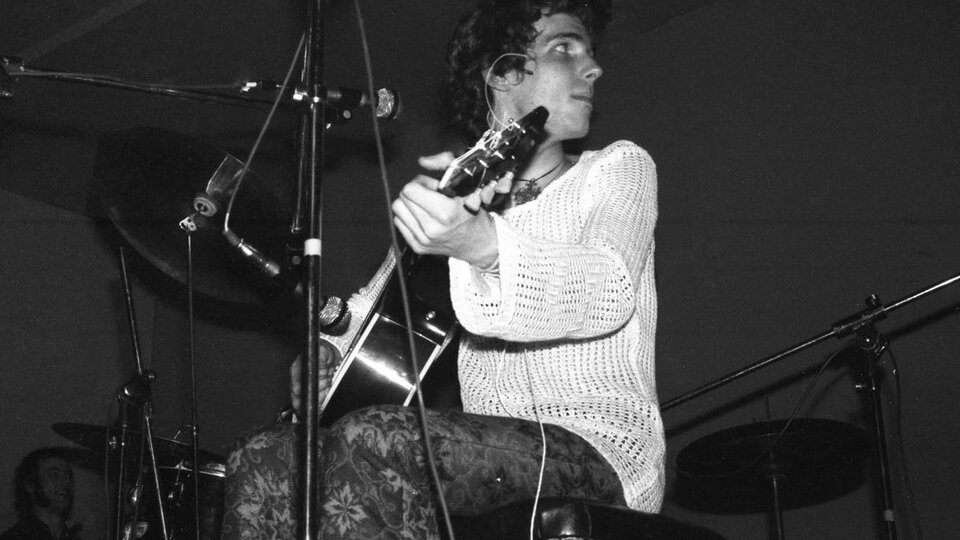
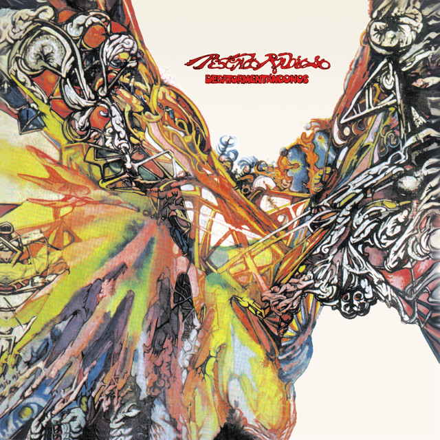
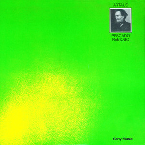
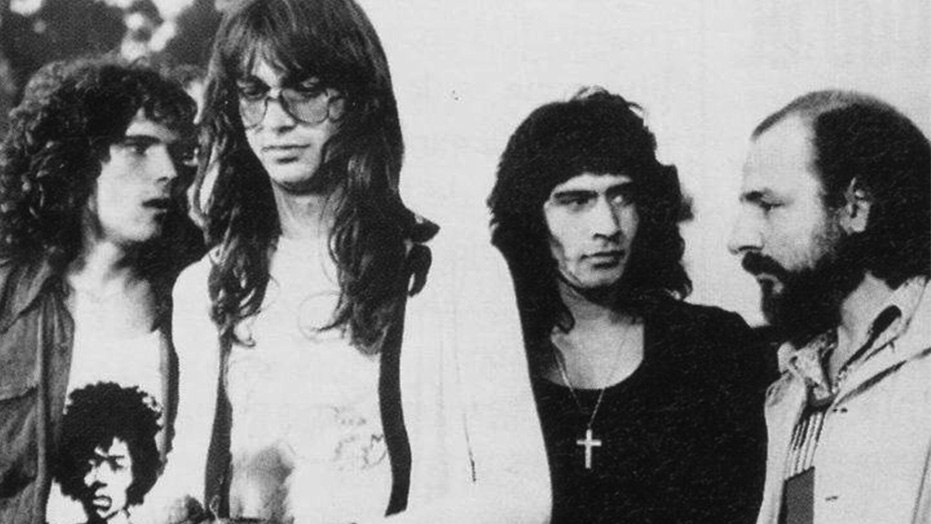

1er Disco de estudio:
Desatormentandonos

2do Disco de estudio:
Pescado Rabioso 2

3er Disco de estudio:
Artaud
Historia de Pescado Rabioso
Pescado Rabioso fue un grupo musical argentino de rock formado en 1971 e integrado, primordialmente, por Luis Alberto Spinetta, David Lebón, Black Amaya y Carlos Cutaia.
Es considerado uno de los grupos fundacionales del rock argentino, por haber introducido hard rock, blues y rock psicodélico a la escena nacional.
Inspirados por el grupo Pappo's Blues y el rock psicodélico que copaba por esa época la escena nacional, y con el que Spinetta se había familiarizado en su reciente viaje a Inglaterra y Países Bajos, Pescado Rabioso publicó su álbum de estudio debut Desatormentándonos en 1972.
Dos canciones del álbum han sido ubicadas entre las mejores 100 del rock argentino según Rolling Stone y MTV: "Me gusta ese tajo" (n.º 57), y "El monstruo de la laguna (Algo flota en la laguna)" (n.º 61). El segundo y último disco de la banda, Pescado 2 (1973), es considerado por la revista Rolling Stone como el 19.º mejor álbum de la historia del rock argentino.En ese mismo año, se publicó Artaud bajo el nombre de la agrupación, aunque se trató de un trabajo solista de Spinetta, ya que para ese entonces la banda ya se había disuelto.
"Yo quería hacer un grupo más violento, una música aún más violenta que el segundo disco de Almendra... Con Pescado intenté romper la ternura y el eje sensible de Almendra... Había partido de una música esencialmente ciudadana, tanguera, con reflejos de bossa-nova, con aires de jazz e influencia de Piazzolla, y ahora me rebelaba contra eso creando riffs... Creo que fue una etapa medio punk."
Luis Alberto Spinetta.

Grupo Pescado Rabioso: David Lebon, Luis Alberto Spinetta, Black Amaya y Carlos Cutaia. - 1972